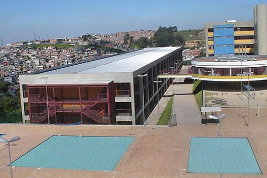

Prefeitura de São Paulo tem planos para instalação de usina solar no CEU BUTANTÃ (30/05/2023)
A implantação do projeto trará uma economia de 96% na conta de luz da unidade escolar
É animador ver a Prefeitura de São Paulo buscando implementar mais projetos de energia solar, desta vez no CEU Butantã. Esse tipo de iniciativa não só reduz os custos de energia elétrica, mas também contribui para a redução das emissões de carbono e promove a conscientização sobre a importância das energias renováveis.
Com um investimento estimado em R$ 1,3 milhão e uma economia prevista de 96% na conta de energia elétrica da unidade escolar, esse projeto demonstra o potencial econômico e ambiental da energia solar. Além disso, o prazo de execução de até 18 meses mostra um compromisso com a implementação ágil de soluções sustentáveis.
Esse projeto não apenas visa a economia imediata de energia elétrica, mas também oferece uma visão de longo prazo ao habilitar o equipamento para gerar energia solar por um período tão extenso, 25 anos. O retorno financeiro a partir do sexto ano mostra o compromisso com a sustentabilidade a longo prazo, mesmo que o investimento inicial exija um período para ser recuperado.
A abordagem de autoconsumo remoto é inovadora e altamente eficiente. Ao permitir o armazenamento da energia gerada em forma de crédito, o sistema não apenas reduz a dependência da rede elétrica convencional, mas também promove a partilha de energia com prédios próximos que possuam a mesma tecnologia. Isso cria uma verdadeira comunidade energética, onde os participantes podem se beneficiar mutuamente ao compartilhar recursos e reduzir os custos operacionais.
Essa abordagem não apenas contribui para a sustentabilidade ambiental, mas também fortalece os laços comunitários e promove a resiliência energética. Espera-se que iniciativas como essa inspirem outras comunidades e organizações a adotarem soluções semelhantes, contribuindo para uma transição energética mais ampla e sustentável.
O objetivo da implantação da usina de energia solar em prédios públicos é aumentar a eficiência energética dessas edificações. Durante sua operação, a usina evitará a emissão de 270 toneladas de gás carbônico, equivalente ao plantio de 6 mil árvores, contribuindo significativamente para a redução da pegada de carbono. Além disso, ao diminuir a dependência da energia proveniente de fontes hídricas, a usina ajudará a evitar o racionamento de recursos naturais, promovendo a sustentabilidade ambiental a longo prazo.
Ceu Paz - google imagem
Metrô de São Paulo abre oportunidade para geração de energia limpa através de edital de autoprodução de energia renovável.
A iniciativa prevê redução de custos com encargos setoriais e ampliação do compromisso da empresa com a sustentabilidade
O Metrô de São Paulo lançou um edital de chamamento público visando a autoprodução de energia elétrica por meio de fontes renováveis. O projeto busca uma parceria com o setor privado para gerar entre 20% a 40% da energia necessária para operar suas linhas. A empresa é responsável pela operação e manutenção das linhas 1-Azul, 2-Verde, 3-Vermelha e 15-Prata, cobrindo 63 estações e 71,5 km de extensão.
Toda a estrutura demanda cerca de 50 MW médios de energia por ano, que atualmente é adquirida no mercado livre de energia. A iniciativa tem como objetivo ampliar o compromisso da companhia com a sustentabilidade e a redução de custos associados aos encargos setoriais.
Conforme o comunicado, as empresas interessadas devem apresentar propostas de arranjos jurídicos e regulatórios. O contrato de parceria deve permitir que o Metrô se enquadre como autoprodutor de energia elétrica e assegure a estabilidade de preços a longo prazo.

Metro Sp - image
Para saber mais sobre esses e outros projetos